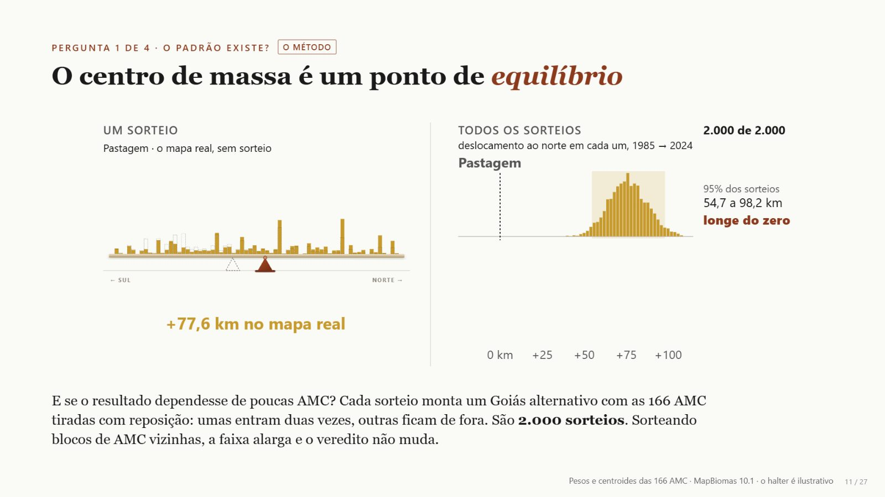
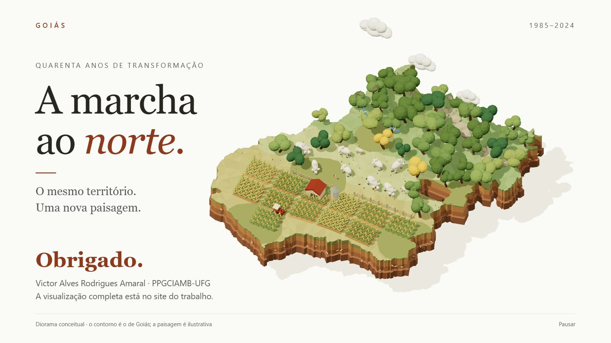
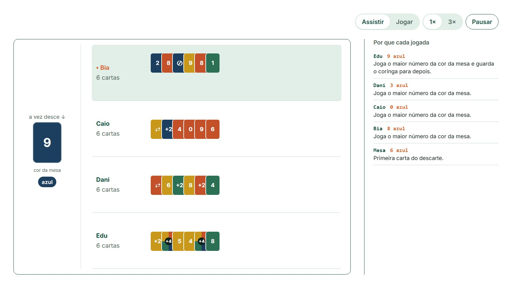

Do chatao agente
IA trabalhando no seu computador
Aponte a câmera do celularCinco toques, sem nome, sem digitar
 Victor AmaralLAPIG · IESA · UFG
demonstração: S simula respostas, 0 apaga
Victor AmaralLAPIG · IESA · UFG
demonstração: S simula respostas, 0 apaga
Precisamos fazer esse curso ser uma experiência.
Victor, ao pedir esta apresentação · 2 nov. 2026
Novembro de 2022. A Folha publica 17 matérias que falam de IA.
No dia 30, a OpenAI abre o ChatGPT para qualquer pessoa.
Desde então, o assunto não saiu mais do jornal.
Em 2023, quase metade falava de modelos e empresas. Em 2026, um quarto.
Cada traço no alto é um modelo novo.
Em 2025, a IA sai do chat e vai trabalhar no computador.
Matérias: Folha de S.Paulo, coleção do Observatório UFG-IA · Lançamentos: Panorama da IA
Mostrar esse cenário a partir do observatório, utilizando o observatório como um “meta” exemplo.
Victor, nas anotações para o curso · 2 nov. 2026
O centro de massa, numa balança
Quarenta anos de pastagem em Goiás, explicados com um halter que tomba.

Conseguiria tornar a explicação do centro de massa mais visual? […] Algo muito bem explicado, usando dados reais e a conta real.
Victor, preparando a qualificação de mestrado · 19 set. 2026
- Quem fez
- Claude Code, na pasta da dissertação
- O que fez
- Transformou a conta numa balança interativa, com os dados da própria pesquisa
Goiás em 3D, em movimento
O fecho da apresentação de qualificação: lavoura, pasto e mata num diorama.

Pedi pra uma IA gerar um diorama bem interessante e impressionante.
Victor, contando como fez · 23 set. 2026
- Quem fez
- Uma IA de código confirmar qual
- O que fez
- Montou a cena em 3D; o Claude Code conferiu se ela travava os slides
Bots que explicam cada jogada
As regras dos bots foram escritas por uma IA. Durante a partida, nenhuma IA é chamada.
Mostrar o Mau-Mau funcionando: a pessoa assiste à partida e joga contra os bots.
Victor, preparando este curso · out. 2026
- Quem fez
- Claude Code
- O que fez
- Leu as regras do jogo original, reescreveu os bots para explicar cada jogada e simulou 500 partidas para achar travas
Um observatório inteiro sobre IA
Mais de 1.600 materiais, as notícias de IA todo dia e aulas interativas. De onde vieram os dados que vocês acabaram de ver.

[o pedido que deu origem ao portal]
Victor pedido a buscar
- Quem fez
- IAs de código confirmar quais
- O que fez
- Escreveu o código do portal; a equipe do LAPIG escolhe e revisa cada conteúdo
Antes de seguir, uma pergunta: quem fez tudo isso?
Tudo foi feito conversando com uma IA, em português comum.
Inclusive esta apresentação. Hoje vocês aprendem o caminho.
ao agente

O Mau-MauO ObservatórioComeçando pelo que toma o seu tempo
Um problema por vez, resolvido aqui mesmo, sem instalar nada.